San Siro Stadium CAD
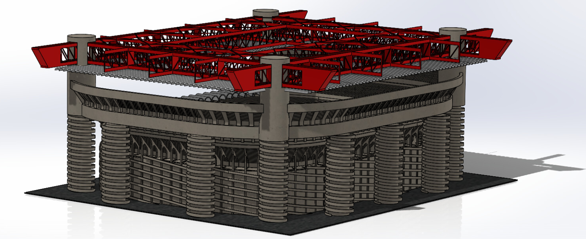
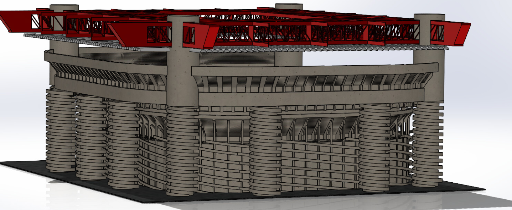
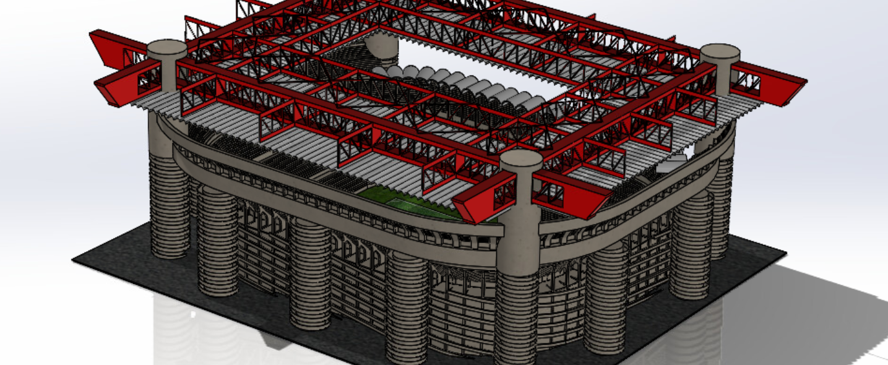
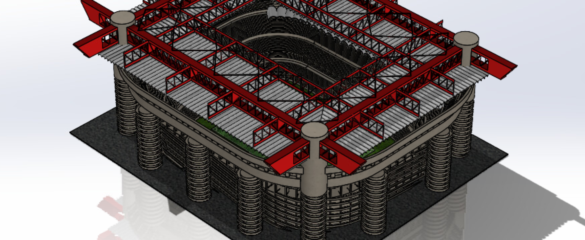
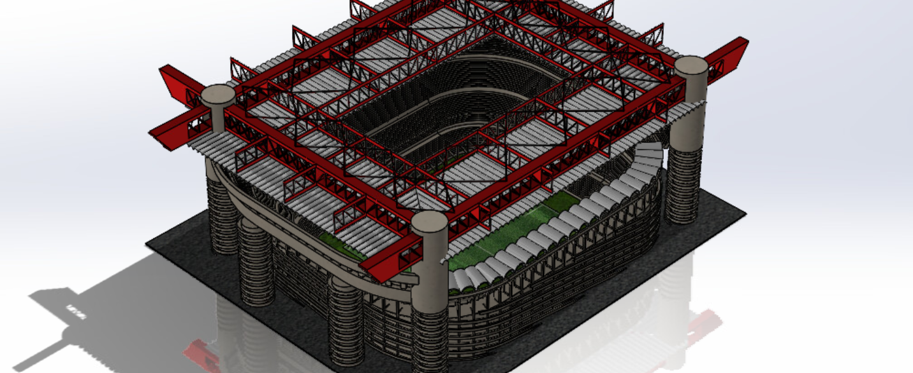
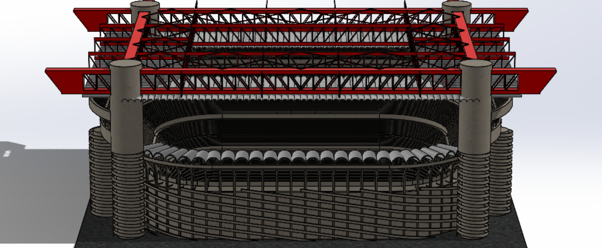
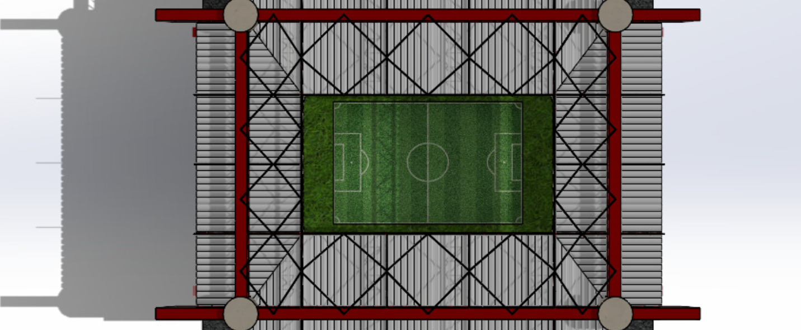
In my junior year at Tufts I modeled the San Siro soccer stadium (home of AC Milan and Inter Milan) for my Materials and Manufacturing class (Tufts ME10). Some side-by-side images of the actual stadium (on the right) and my model (on the left) are shown below.
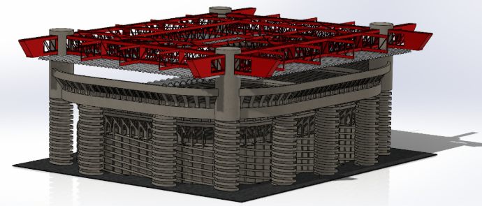
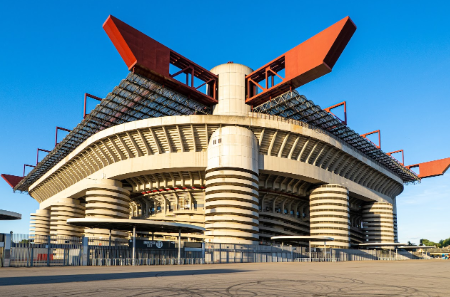
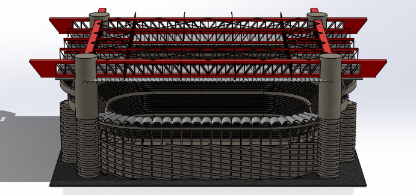
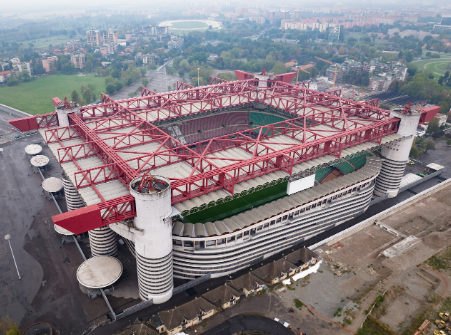
A friend took my CAD model, added some textures and lighting, and then walked around it using his VR headset...